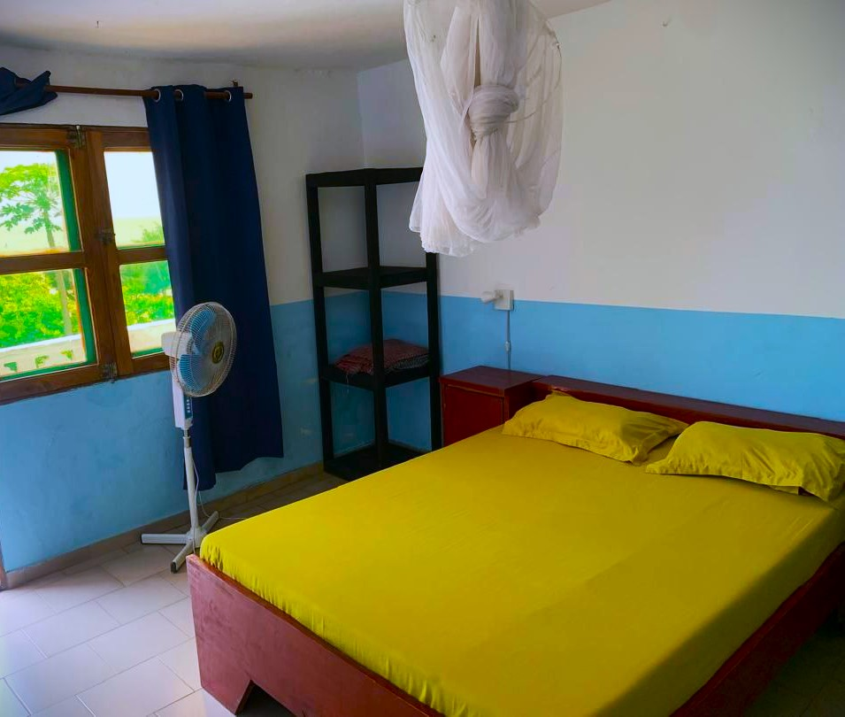
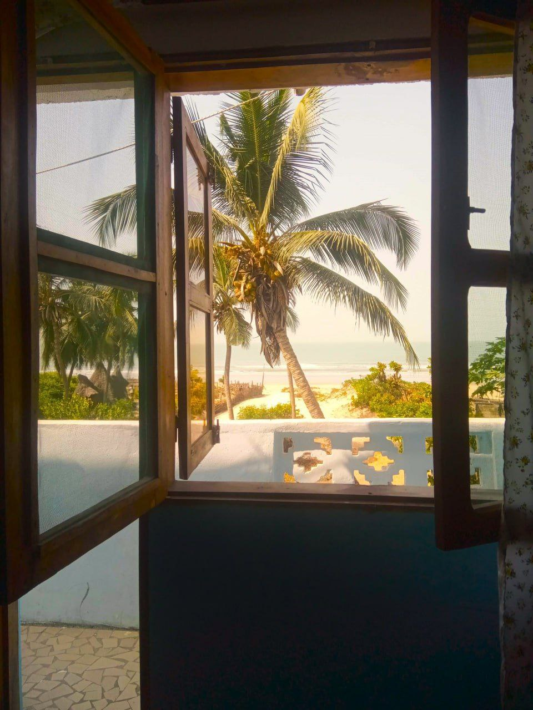
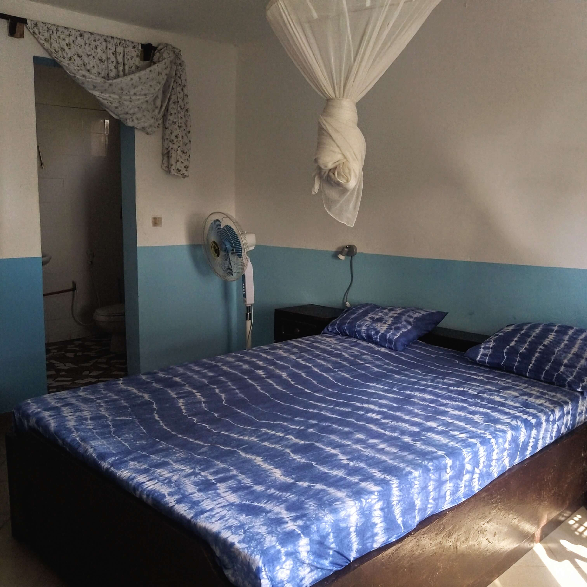
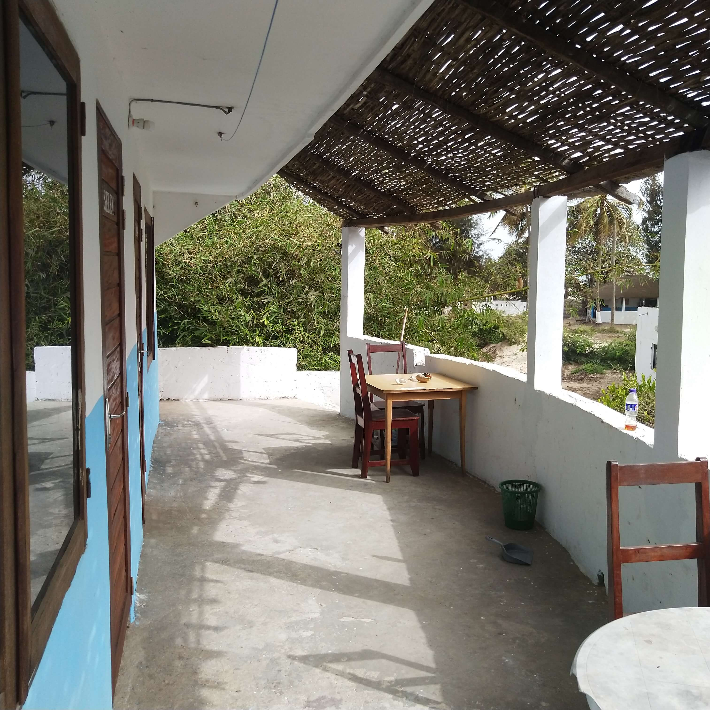

BADIAT - ENAMPOR
CHAMBRE AVEC BALCON OFFRANT UNE VUE SUR LA MER (premium)
Découvrez nos chambres Badiat et Enampor, idéales pour les amoureux de l'océan ! Spacieuses et lumineuses, elles sont parfaites pour un séjour en solo ou à deux. Chacune vous offre un balcon privé avec une vue imprenable sur les vagues, un cadre idyllique pour savourer votre café matinal face au lever du soleil ou déguster un apéritif en admirant le coucher. C'est un coin intime pour des moments inoubliables, bercés par la douce brise marine
15 000 CFA/NUIT
Le petit déjeuner en extrat pour 1500 cfa
SELEKI - ETAMA
CHAMBRE AVEC UNE TERRASSE PRIVÉE AVEC UNE VUE SUR LA MER (confort)
Nos chambres Seleki et Etama , idéales pour les familles, offrent un espace extérieur plus généreux avec une terrasse privée. Vous y profiterez d'un accès direct à votre coin de détente personnel, parfait pour vous relaxer au soleil, lire en toute tranquillité, ou partager des moments conviviaux en famille. Sur demande, un lit supplémentaire peut être ajouté pour accueillir confortablement vos enfants.
13 500 CFA/NUIT
Le petit déjeuner en extrat pour 1500 cfa

